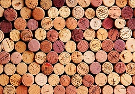
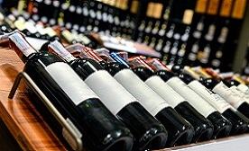
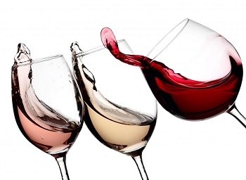
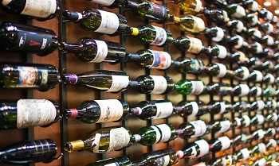
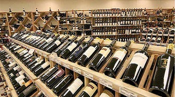

Gdy przed posiłkiem wybieramy wino, zazwyczaj koncentrujemy się na jego kolorze. Białe czy czerwone? A może różowe? A potem przez naszą głowę przemyka zwykle myśl: to proste, wystarczy zastosować się do tradycyjnej zasady: czerwone do mięs ciemnych, białe natomiast do drobiu i ryb. Czy jednak na pewno?
Jeżeli temat cię interesuje, kontynuuj zgłębianie tajemnic smaków i aromatów. A ponieważ własne doświadczenie w tym względzie jest o wiele cenniejsze niż najlepsze wskazówki, niech zamieszczone tu uwagi będą dla ciebie jedynie bodźcem do podejmowania kolejnych prób. Pamiętaj, że droga do pełnej wiedzy będzie długa... ale za to jakże przyjemna.
Wino, leżakujące w beczce lub w butelce, zmienia się w trakcie dojrzewania. Po otwarciu jednak zachowuje niemal ten sam smak i aromat. Dlatego łatwiej jest dopasować potrawę do wina niż odwrotnie. Warto więc najpierw wyszukać wino, które dobrze pasuje do tego, co zamierzamy przyrządzić, i potem tak dobrać składniki, aby jak najlepiej współgrały z winem, które chcielibyśmy wypić właśnie do tego dania.
Wina mogą harmonizować z potrawami niezależnie od tego jakiego są koloru. Tradycyjny podział na białe, różowe i czerwone wynika wyłącznie ze względów użytecznych. Jeśli zamkniemy oczy i weźmiemy do ust na przykład łyk dobrze schłodzonego, lekkiego, owocowego czerwonego wina, z trudem odróżnimy je od białego. A podział win bazujący na różnych odmianach winorośli? Także nie musi wiele wnosić do naszych rozważań, gdyż często produkuje się wina z mieszanki różnych odmian. Z drugiej strony zaś z jednej odmiany powstają różne jakościowo wina – od stołowego po premier cru!
Amerykański sommelier Jerry Comfort od niemal 20 lat zajmuje się doborem win do potraw. Jego rozważania to poruszający wyobraźnię skarbiec wiadomości, a także zapowiedź prawdziwej rozkoszy dla podniebienia. Dzieli on świat win na różne kategorie, ponieważ, jak twierdzi: "smak wina jest zależny od bardzo wielu czynników, takich jak sposób produkcji, gatunek winorośli, miejsce, w którym ta była uprawiana itp.". Można pójść jeszcze dalej. Większość z nas dosyć niepewnie i schematycznie opisuje bukiet ulubionego wina, za to znacznie dokładniej potrafi powiedzieć o jego roczniku, producencie, od którego pochodzi i rejonie uprawy danej winorośli. Wziąwszy to wszystko pod uwagę, przedstawimy pobieżny podział win, starając się potraktować ten niewątpliwie skomplikowany temat w jak najprostszy sposób.
Niektórzy winni smakosze znajdą tu niewątpliwie słabe punkty, ponieważ w każdej kategorii mieszczą się typowi przedstawiciele, ale także wyjątki i przykłady odmiennych właściwości. Nie wszystkie wina z Bordeaux są jednorodne i wysokiej jakości, a nie każde wino zamorskie jest ciężkie i charakteryzuje się wysoką zawartością alkoholu. Winiarski świat stale się zmienia, ostatnio pojawiła się moda na nowe wina. Uprawiane w specyficznych warunkach. Cechuje je wykwintność i złożoność smaków. Osiąga się to między innymi przez to, że winorośl z klimatu umiarkowanego sadzi się na większych wysokościach, gdzie jest znacznie chłodniej i tak tworzy się nowy, znacznie bardziej wyszukany styl!
Wyjątków nie brakuje w żadnej winnej kategorii i właśnie to sprawia, że wino jest tak interesującym zagadnieniem. Jednak większość win z łatwością można sklasyfikować. Te podstawowe typy i kategorie win przedstawione zostały w poniższej tabeli.
| Typ wina | Typ 1 lekkie i świeże |
Typ 2 owocowe i harmonijne |
Typ 3 złożone i wykwintne |
Typ 4 energetyzujące, o bogatym bukiecie |
|---|---|---|---|---|
| Opis | świeże, bardziej owocowe, lekkie wino, z reguły leżakowane w stalowych beczkach |
ciężkie, smaczne wino z łagodnym, krystalicznym i zbalansowanym owocowym aromatem, nieleżakowane w drewnianych beczkach |
złożony, bogaty smak, ciekawy i wykwintny, z potencjałem na dojrzałe wino, doskonale zintegrowany bukiet, leżakowane w beczkach drewnianych lub stalowych |
ciężkie, energetyzujące, bardziej skoncentrowane wino o bogatym bukiecie, wyraźnie wyczuwalny alkohol, leżakowane w stalowych lub drewnianych beczkach |
| Smaki | lekkie owocowe aromaty, perliste i lekkie, z południowych rejonów nawet młode |
od lekkich owocowych aż po dojrzałe aromaty, średnia intensywność, wyczuwalne smaki ziołowe |
zwarty, lekko owocowy, o spójnym aromacie, ze świetną strukturą i czytelnym posmakiem |
bardzo intensywne, obfite, dojrzałe i wyraziste aromaty, soczyste, ciężkie |
| Kwaśność | apetycznie świeża aż do żywej i pobudzającej |
umiarkowana, harmonijnie zintegrowana, łagodna aż do soczyście intensywnej |
doskonale zintegrowana, żywa, spójna smakowo i strukturalnie |
wysoko dojrzała, nieznaczna, lekko spotęgowana przez alkohol |
| Białe wina |
do 12% | 12-13,5% | 12,5-13,5% | powyżej 13,5% |
| kabinett, elbling, gutedel, steirischer junker, bordoskie entredeux-mers, muscadet, vinho verde, harslevelu |
silvaner, scheurebe, grauburgunder, steirische klassik, touraine, chenin, verdejo, furmint |
riesling, lagen sauvingnon blanc, steirmark premier cru, grand cru, chablis, sancerre, bordeaux, graves, dezaley, chardonnay |
rulander, smaragd, grands crus, vouvray, condrieu, marsanne, roussanne, vin jaune, chardonnay |
|
| Czerwone wina |
do 12,5% | 12,5-13,5% | 12,5-14% | powyżej 14% |
| trollinger, beaujolais, cotes de bourg, bardolino, vernatsch |
pinot noir, dornfelder, lemberger, zweigelt, saint laurent, cambernet franc, beaujolais cru, bordeaux, cotes du rhone, valpolicella, dolcetto, tempranillo, pinotage |
pinot noir cru, bordeaux cru, cote-rotie, barbaresco, chianti classico, brunello di montalcino, barolo, rioja, ribera del duero, premium cabernet, sauvignon |
blaufrankisch, reserve, amarone, priorat, douro, zinfandel, merlot, malbec, shiraz, chateauneuf |
|
| Musujące wina |
do 12,5% | 12-12,5% | 12-12,5% | 11-15% |
| markensekt, prosecco, asti spumante, lambrusco |
winzersekt, szampan, cremant, cava, cap calssique |
szampan, krug, jacquesson, bollinger |
krimsekt, sparkling shiraz |
|
| Słodkie wina |
7-10% | 7,5-13% | 6,5-12,5% | 12,5-16% |
| reisling kabinett, moscato d'asti |
spatlese, gewurztraminer, recioto di soave, rosenmuskateller |
auslese, beerenauslese, auslese, lodowe, ruster ausbruch, quarts, coteaux, jurancon, tokaj aszu |
alzacja,edelsuss, słomkowe, vin de pailles, sauternes, monbazillac, recioto, valpolicella, vin santo, moscato passito, pantelleria, constanca |
|
| Wzmocnione wina |
14-18% | 15-20% | 18-22% | |
| Wytrawne sherry amontillado, sherry palo cortado, madera sercial, porto białe Słodkie banyuls, maury, muscat de rivesaltes, muscat de beaumes, porto ruby, porto tawny, porto LBV |
Wytrawne sherry manzanilla, sherry fino, madera verdelho, porto białe Słodkie banyuls grand cru, madera bual, porto tawny, porto colheita, porto vintage |
Wytrawne sherry oloroso Słodkie madera malmsey, marsala, sherry pedro ximenez, cream sherry, montlla-moriles, orange muscat, black muscat, brown muscat |
Tekst pochodzi z książki Christiny Fischer pt. JAKIE WINO DO POSIŁKU? Szkoła kształtowania smaku.